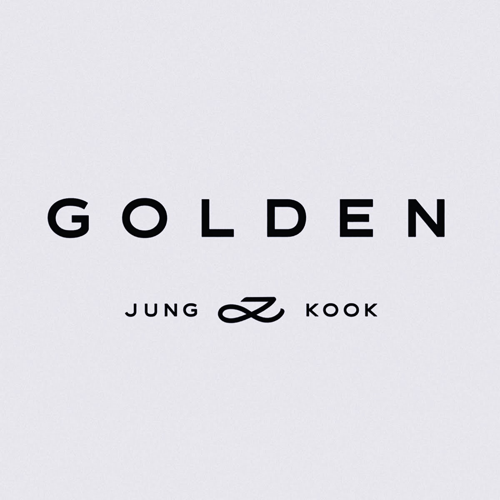
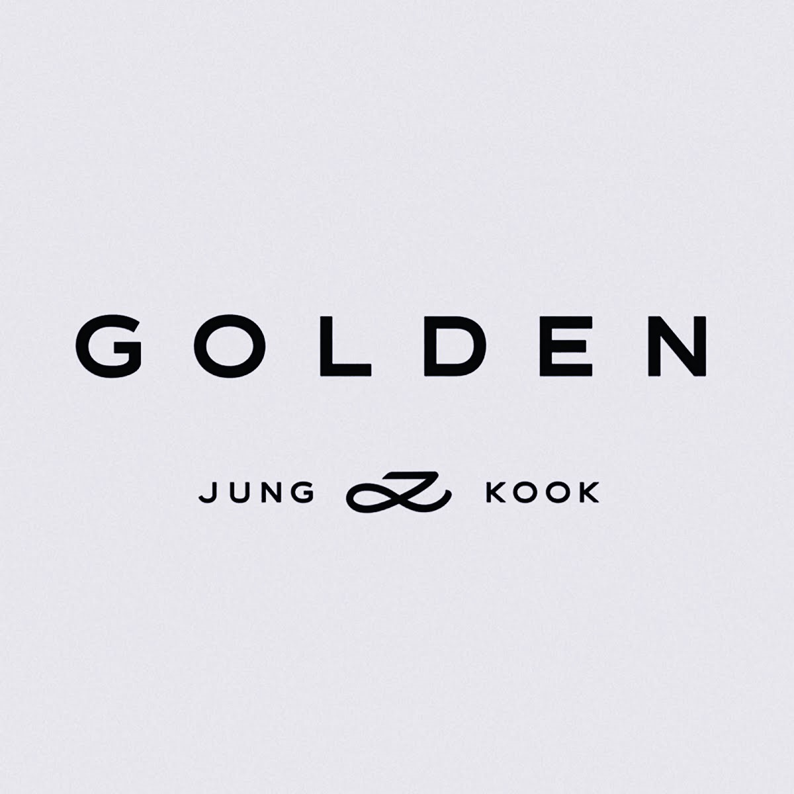

Golden by Jungkook
Uppcoming Realise Date: November 3 2023
Artists Featuring In the Album:
- Latto
- Jack Harlow
- DJ Snake
- Major Lazer
The wait for details about Jungkook's highly-anticipated debut solo album has finally come to an end! On Oct. 3 — following the July release of his Billboard No. 1 single, "Seven," and his September follow-up single, "3D" — Big Hit Entertainment announced in a Weverse statement that Jungkook will release his first album called "Golden" on Nov. 3.
 
